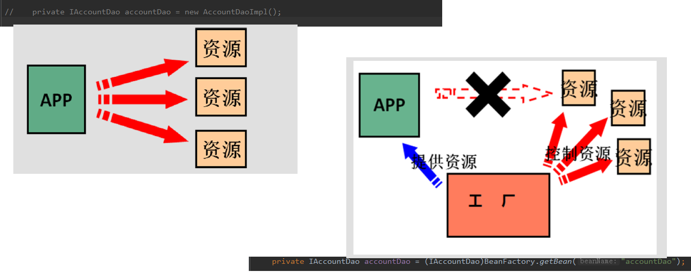

一、spring的概述
- Spring是分层的 Java SE/EE应用 full-stack 轻量级开源框架，以 IoC（Inverse Of Control：反转控制）和 AOP（Aspect Oriented Programming：面向切面编程）为内核，提供了展现层 SpringMVC 和持久层 Spring JDBC 以及业务层事务管理等众多的企业级应用技术，还能整合开源世界众多著名的第三方框架和类库，逐渐成为使用最多的Java EE 企业应用开源框架
二、spring体系结构

1，Spring Core
Core模块是Spring的核心类库，Spring的所有功能都依赖于该类库，Core主要实现IOC功能，Spring的所有功能都是借助IOC实现的。
2，AOP
AOP模块是Spring的AOP库，提供了AOP（拦截器）机制，并提供常用的拦截器，供用户自定义和配置。
3，ORM
Spring 的ORM模块提供对常用的ORM框架的管理和辅助支持，Spring支持常用的Hibernate，ibtas，jdao等框架的支持，Spring本身并不对ORM进行实现，仅对常见的ORM框架进行封装，并对其进行管理
4，DAO模块
Spring 提供对JDBC的支持，对JDBC进行封装，允许JDBC使用Spring资源，并能统一管理JDBC事物，并不对JDBC进行实现。（执行sql语句）
5，WEB模块
WEB模块提供对常见框架如Struts1，WEBWORK（Struts 2），JSF的支持，Spring能够管理这些框架，将Spring的资源注入给框架，也能在这些框架的前后插入拦截器。
6，Context模块
Context模块提供框架式的Bean访问方式，其他程序可以通过Context访问Spring的Bean资源，相当于资源注入。
7，MVC模块
WEB MVC模块为Spring提供了一套轻量级的MVC实现，在Spring的开发中，我们既可以用Struts也可以用Spring自己的MVC框架，相对于Struts，Spring自己的MVC框架更加简洁和方便。
- 程序的耦合
- 耦合：程序间的依赖关系
- 类之间的依赖
- 方法间的依赖
- 解耦：降低程序间的依赖关系
- 实际开发中：应该做到编译期不依赖，运行时依赖
- 解耦思路：
- 第一步：使用反射来创建对象，而避免使用new关键字
- 第二步：通过配置文件来获取要创建的对象全限定类名
- 一个创建Bean对象的工厂
- 第一个：需要一个配置文件来配置我们的service和dao
- 配置的内容：唯一标识=全限定类名（key=value）
- 通过读取配置文件中配置的内容，反射创建对象
三、IOC的概念
- 控制反转：把创建对象的权利交给框架，是框架的重要特征，它包括依赖注入和依赖查找
- IOC的作用：削减计算机的耦合，（解除代码中的依赖关系）
- 
四、使用spring中的IOC
- xml配置
<?xml version="1.0" encoding="UTF-8" ?>
<beans xmlns="http://www.springframework.org/schema/beans"
xmlns:xsi="http://www.w3.org/2001/XMLSchema-instance"
xsi:schemaLocation="http://www.springframework.org/schema/beans
http://www.springframework.org/schema/beans/spring-beans.xsd">
<bean id="accountDao" class="com.vaught.dao.impl.AccountDaoImpl"></bean>
<bean id="accountService" class="com.vaught.service.impl.AccountServiceImpl"></bean>
</beans>
- ApplicationContext的三个常用实现类
- ClassPathXmlApplicationContext:它可以加载类路径下的配置文件，要求配置文件必须在类路径下
- FileSystemXmlApplicationContext:它可以加载磁盘任意路径下的配置文件
- AnnotationConfigApplicationContext:用于读取注解创建容器
- 核心容器两个接口引发出的问题：
- ApplicationContext:（单例对象适用）
- 它在构建核心容器时，创建对象采取的策略是采用立即加载的方式，也就是说，只要一读取玩配置文件马上就创建配置文件中配置的对象
- BeanFactory:（多例对象适用）
- 它在构建核心容器时，创建对象采取的策略是采用延迟加载方式，也就是说，什么时候根据id获取对象了，什么时候才真正创建对象
- 创建bean的三种方式
- 方式一：使用默认构造函数创建，在spring的配置文件中使用bean标签，配以id和class属性之后，且没有其他属性和标签时，采用的就是默认构造函数创建bean对象，如果类中没有构造函数，则无法创建对象
<bean id="accountService" class="com.vaught.service.impl.AccountServiceImpl"></bean>
- 方式二：使用普通工厂中的方法创建对象（使用某个类中的方法创建对象，并存入spring容器）
<bean id="instanceFactory" class="com.vaught.factory.InstanceFactory"></bean>
<bean id="accountService" factory-bean="instanceFactory" factory-method="getAccountService"></bean>
- 方式三：使用工厂中的静态方法创建对象（使用某个类中的静态方法创建对象，并存入spring容器）
<bean id="accountService" class="com.vaught.factory.StaticFactory" factory-method="getAccountService"></bean>
- bean对象的作用范围
- bean标签的scope属性：
- 作用：用于指定bean的作用范围
- 取值：
- singleton:单例的
- prototype:多例的
- request:作用于web应用的请求范围
- session:所用于web应用的会话范围
- global-session:作用于集群环境的会话范围（全局会话范围），当不是集群环境时，它就是session
- bean对象的生命周期
- 单例对象：
- 当容器创建时对象创建产生
- 只要容器还在，对象就存在
- 容器销毁，对象消亡
- 总结：单例对象的生命周期和容器相同
- 多例对象：
- 使用对象时，spring框架会创建
- 对象只要在使用过程中就会一直存在
- 当对象长时间不用切没有别的对象引用时，由java的垃圾回收器回收
五、spring中的依赖注入
- 依赖注入：Dependency Injection
- IOC的作用：降低程序间的耦合（依赖关系）
- 依赖关系的管理：以后都交给spring来维护
- 在当前类需要用到其他类的对象，由spring为我们提供，我们只需要在配置文件中说明
- 依赖关系的维护：就称之为依赖注入
- 依赖注入：将类的对象的创建交给了spring容器，如果一个类的成员位置定义了成员变量，用到该变量需要给变量赋值，将赋值的工作交给spring
- 能注入的数据有三类
- 基本类型和String
- 其他bean类型（在配置文件中或者注解配置过的bean）
- 复杂类型、集合类型
- 注入方式有三种：
- 构造函数
- 使用标签：constructor-arg
- 标签在bean标签内部
- 标签中的属性：
- type:用于指定要注入的数据的数据类型，该数据类型也是构造函数中某个或某些参数的类型
- index:用于指定要注入的数据给构造函数中指定索引位置的参数赋值，索引从0开始
- name:用于指定给构造函数中指定名称的参数赋值
- vaue:用于提供基本类型和String类型的数据
- ref:用于指定其他的bean类型数据，它指的就是在spring的IOC核心容器中出现过的bean对象
- 优势：在获取bean对象时，注入数据是必须的操作，否则对象无法创建成功
- 弊端：改变了bean对象的实例化方式，使我们在创建对象时，如果用不到这些数据，也必须提供
<bean id="accountService" class="com.vaught.service.impl.AccountServiceImpl">
<constructor-arg name="age" value="18"></constructor-arg>
<constructor-arg name="name" value="还有"></constructor-arg>
<constructor-arg name="birthday" ref="now"></constructor-arg>
</bean>
<bean id="now" class="java.util.Date"></bean>
- set方法
- 涉及的标签：property
- 出现的位置：bean标签的内部
- 标签的属性：
- name:用于指定注入时所电泳的set方法名称
- vaue:用于提供基本类型和String类型的数据
- ref:用于指定其他的bean类型数据，它指的就是在spring的IOC核心容器中出现过的bean对象
- 优势：穿件对象时，没有明确的限制，可以直接使用默认构造函数
- 弊端：如果某个成员必须有值，则获取对象时可能set方法没有执行
<bean id="accountService2" class="com.vaught.service.impl.AccountServiceImpl2">
<property name="age" value="18"></property>
<property name="name" value="有一个"></property>
<property name="birthday" ref="now"></property>
</bean>
复杂类型：结构相同的集合，标签可以互换
<bean id="accountService3" class="com.vaught.service.impl.AccountServiceImpl3">
<property name="myStrs">
<array>
<value>aaa</value>
<value>bbb</value>
<value>ccc</value>
</array>
</property>
<property name="myList">
<list>
<value>aaa</value>
<value>bbb</value>
<value>ccc</value>
</list>
</property>
<property name="mySet">
<set>
<value>aaa</value>
<value>bbb</value>
<value>ccc</value>
</set>
</property>
<property name="myMap">
<map>
<entry key="testA" value="aaa"></entry>
<entry key="testB" value="bbb"></entry>
<entry key="testC" value="ccc"></entry>
</map>
</property>
<property name="myPro">
<props>
<prop key="testC">5432</prop>
</props>
</property>
</bean>
- 注解
- 用于创建对象的：他们的作用就和在XML配置文件中编写一个<bean>标签实现的功能是一样的
- Component
- 作用：用于把当前类对象存入spring容器中
- 属性：value：用于指定bean的id。当我们不写时，它的默认值是当前类名，且首字母改小写。
- Controller：一般用在表现层
- Service：一般用在业务层
- Repository：一般用在持久层
- 以上三个注解他们的作用和属性与Component是一模一样。他们三个是spring框架为我们提供明确的三层使用的注解，使我们的三层对象更加清晰
- 用于注入数据的：他们的作用就和在xml配置文件中的bean标签中写一个<property>标签的作用是一样的
- Autowired:
- 作用：
- 自动按照类型注入。只要容器中有唯一的一个bean对象类型和要注入的变量类型匹配，就可以注入成功
- 如果ioc容器中没有任何bean的类型和要注入的变量类型匹配，则报错。
- 如果Ioc容器中有多个类型匹配时：
- 出现位置：
- 可以是变量上，也可以是方法上
- 细节：
- 在使用注解注入时，set方法就不是必须的了。
- Qualifier:
- 作用：在按照类中注入的基础之上再按照名称注入。它在给类成员注入时不能单独使用。但是在给方法参数注入时可以
- 属性：
- value：用于指定注入bean的id。
- Resource
- 作用：直接按照bean的id注入。它可以独立使用
- 属性：
- name：用于指定bean的id。
- 以上三个注入都只能注入其他bean类型的数据，而基本类型和String类型无法使用上述注解实现。另外，集合类型的注入只能通过XML来实现。
- Value
- 作用：用于注入基本类型和String类型的数据
- 属性：
- value：用于指定数据的值。它可以使用spring中SpEL(也就是spring的el表达式）
- SpEL的写法：${表达式}
- 用于改变作用范围的：他们的作用就和在bean标签中使用scope属性实现的功能是一样的
- Scope（默认情况下是singleton单例的）
- 作用：用于指定bean的作用范围
- 属性：
- value：指定范围的取值。常用取值：singleton prototype
- 和生命周期相关：他们的作用就和在bean标签中使用init-method和destroy-methode的作用是一样的
- PreDestroy
- 作用：用于指定销毁方法
- PostConstruct
- 作用：用于指定初始化方法
- 配置文件相关
- Configuration
- 作用：指定当前类是一个配置类
- 细节：当配置类作为AnnotationConfigApplicationContext对象创建的参数时，该注解可以不写。
- ComponentScan
- 作用：用于通过注解指定spring在创建容器时要扫描的包
- 属性：
- value：它和basePackages的作用是一样的，都是用于指定创建容器时要扫描的包。
- 我们使用此注解就等同于在xml中配置了:
- <context:component-scan base-package="com.itheima"></context:component-scan>
- Bean
- 作用：用于把当前方法的返回值作为bean对象存入spring的ioc容器中
- 属性:
- name:用于指定bean的id。当不写时，默认值是当前方法的名称
- 细节：
- 当我们使用注解配置方法时，如果方法有参数，spring框架会去容器中查找有没有可用的bean对象。 查找的方式和Autowired注解的作用是一样的
- Import
- 作用：用于导入其他的配置类
- 属性：
- value：用于指定其他配置类的字节码。
- 当我们使用Import的注解之后，有Import注解的类就父配置类，而导入的都是子配置类
- PropertySource
- 作用：用于指定properties文件的位置
- 属性：
- value：指定文件的名称和路径。
- 关键字：classpath，表示类路径下
六、spring整合Junit单元测试
- Junit单元测试中，没有main方法也能执行
- Junit继承了一个main方法，该方法就会判断当前测试类中哪些方法有@Test注解，Junit就会让Test注解的方法执行
- 步骤配置：
- 导入spring整合Junit的jar
- 使用Junit提供的一个注解把原有的main方法替换了，替换成spring提供的
- @Runwith
- 告知spring的运行器，spring和IOC创建 是基于xml还是配置，并说明位置
- @ContextConfiguration
- locations:指定xml文件的位置加上classpath关键字表示在类路径下
- classes:指定注解类所在的位置
- 注意：使用spring5.x版本的时候，要求Junit的jar必须是4.12及以上